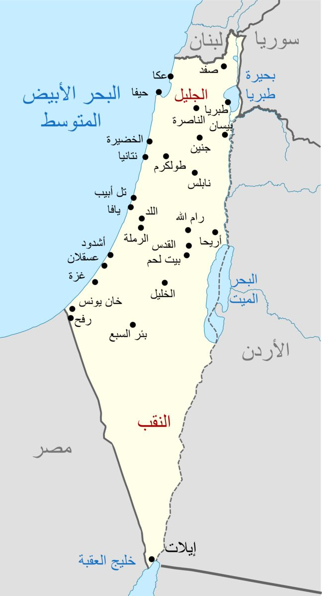
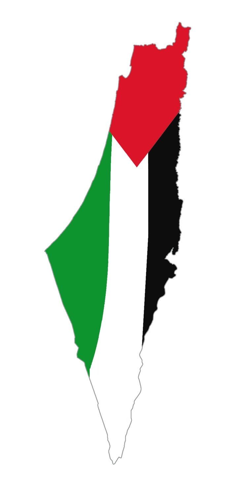

Since October 7, Gaza has been facing one of the worst humanitarian disasters in modern history. More than 40,000 Palestinians have been martyred, including over 17,000 children and women. Thousands of others remain under the rubble or missing.

Entire neighborhoods have been destroyed. According to reports from Sehatty and Al Jazeera, more than 70% of Gaza’s infrastructure — including hospitals, schools, and water networks — has been damaged or completely destroyed.
The ongoing blockade and bombardments have resulted in a severe famine crisis. The people of Gaza are struggling to survive with little access to food, clean water, or electricity.

Despite all the suffering, the Palestinian people continue to show remarkable resilience and steadfastness in defending their homeland and human dignity.